Every watt becomes heat. In space, the only way out is radiation.
Every conversation about industry in space (computing, refining, manufacturing) eventually becomes a conversation about heat. Electricity is the easy part. A wire carries it across a spacecraft almost for free, and when distance gets expensive you raise the voltage. Heat has no cheap equivalent. Left to itself it flows downhill in temperature, every interface it crosses takes a toll, and in vacuum the only exit is radiation, which scales with the fourth power of temperature. A heat pump can lift it to a hotter, smaller radiator, but only by spending more electrical power; this model doesn't include one yet.
I built this explorer to make that intuition quantitative. It follows the energy from the solar array, through the payload, down the temperature staircase, to the radiator, and shows which assumptions actually move the size and mass of the hardware. It started as a question about orbital data centers. I want it to grow into a tool for any energy-hungry work in cislunar space and, eventually, on the Moon.
It is a companion to Andrew McCalip's Space Datacenters, which asks whether orbital compute pays. This one asks what the heat and power hardware has to look like. Every number carries a source or a label (see Assumptions). Please check the math, challenge the assumptions, and send me better numbers.
Note: Built from publicly available information and first-principles physics. No proprietary data. These are my personal views.
Try this first. Lower the source temperature limit and watch the radiator area grow. Then open the temperature staircase to see where the temperature budget goes.
Reference case

| Part | Inputs | Output |
|---|---|---|
| Heat path | heat source, temperature limit, power per package, coolant loop | coolant temperature T |
| Radiator | ε, α, fin efficiency, orientation, sizing margin, areal density; what it sees (location) | heat rejected per m² at T, so radiator area |
| Power supply | cells, bus voltage, battery; sunlight (location) | solar array area, battery mass |
| Shared | heat load Q (total load ÷ conversion efficiency), location | feeds the radiator and the power supply |
| Results | all of the above | mass budget, solar array : radiator area, sensitivity |
Part 1
Everything between the heat source and the fluid that reaches the radiator. Its only output is the coolant temperature T, and every kelvin it spends shrinks what the radiator can do.
Heat flows downhill in temperature: ΔT = Q × R, thermal Ohm's law. Every interface spends part of a small, fixed budget, the source limit minus the radiator temperature. Most of it is spent within a centimeter of the heat source: silicon, interface materials, lid, cold plate. Distance itself costs little once heat is in a pumped loop.
Each line is a 1 kW path from source to panel, scored as the share of ideal panel area doing useful work. A wire loses almost nothing over distance, because voltage can be stepped up. Heat has no cheap transformer (a heat pump costs power): a 10 × 10 cm solid copper bar cannot carry 1 kW much past a metre, and a pumped loop makes distance cheap but still pays the fixed interface staircase.
Part 2
How much heat each square metre rejects at temperature T, given what the radiator sees. With the heat load Q, that sets the radiator area.
Net heat rejected per m² of two-sided panel, versus the radiating fluid temperature, in each environment. Flux grows as T⁴, so hot waste heat is cheap to reject. A warm view (Earth, the lunar dayside, sunlit regolith) cancels the low-temperature end of the curve. On the lunar equator at noon, a vertical fin with the Starmind-mode surface properties absorbs more than it emits below about 335 K (curves that drop off the log scale have gone net-negative).
A radiator near a body sees part of it instead of 3 K space and absorbs its infrared. Edge-on panels see less than panels facing the body. The penalty fades with altitude, and is larger for colder radiators.
Part 3
The solar array and battery that deliver the load through light and dark. The location sets the sunlight; the heat load Q sets the power.
The β angle between the orbit plane and the Sun sets how long each eclipse lasts. Above a critical β the spacecraft never enters the planet's shadow: no battery, and no oversized solar array to recharge one. A dawn–dusk sun-synchronous orbit flies along the terminator to stay there. The radiator barely notices, so the case for terminator orbits rests on power. Not modelled here: eclipse thermal cycling of chips and radiators, and losing compute in the dark.
Results
These charts combine all three parts, so they have no inputs of their own. Change anything above and they move.
Same scenario, sweeping only the heat source's temperature limit. The solar array is fixed by the power drawn. The radiator shrinks steeply with temperature. Chips are pinned near 350–400 K, so compute pays nearly full price. For a process rejecting heat at 600 K or more, the radiator becomes small next to the solar array.
Payload mass is excluded on purpose. Per m², radiators weigh several times more than solar arrays, so a 5:1 area ratio is not a 5:1 mass ratio. In darkness-heavy environments, energy storage can outweigh both.
Each bar moves one parameter down or up by one step and holds everything else fixed. Steps are in natural units: ±10 K on temperatures, ±0.05 on emissivity, ±20 % on areal densities. Hover a bar for the value tried.
Tags: [source] cited reference · ASSUMPTION engineering judgement · CALIBRATED tuned to reproduce a published figure · SECONDARY widely quoted, not confirmed against a primary source. Select a parameter's name () to read what it means.